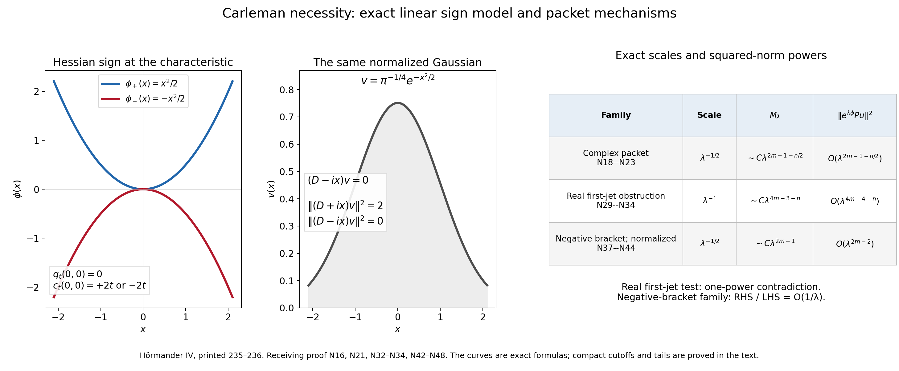
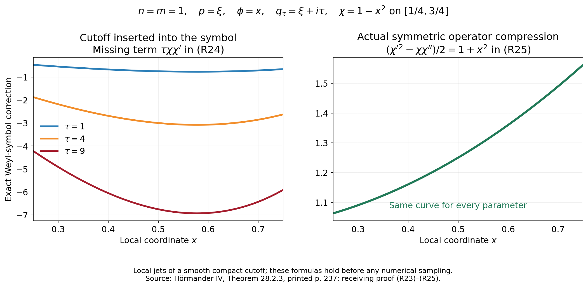
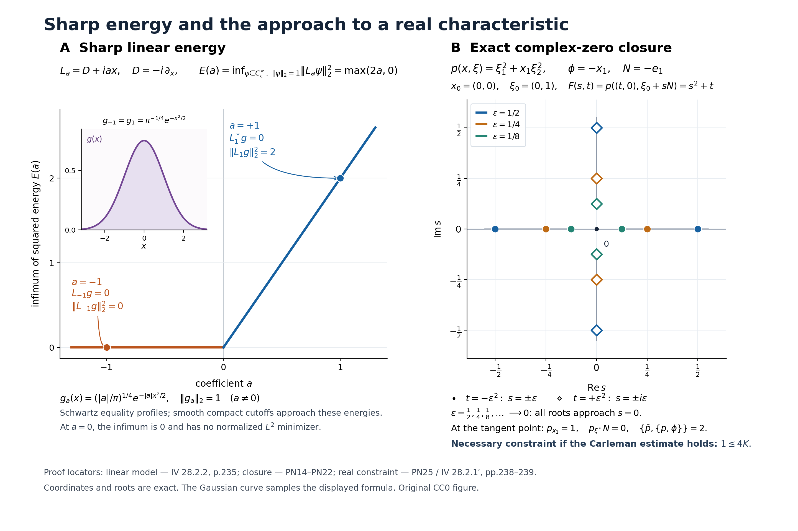

General Carleman estimates and real tangent necessity
A weighted estimate controlling every derivative below the operator order imposes an exact positivity condition at each complex characteristic. A rescaled packet identifies its sharp linear model, and a second scale detects every real characteristic with vanishing first jet. Conversely, a full-symbol inequality gives the weighted estimate with its original leading constant and an explicit parameter loss. Principal normality then turns the complex condition into a real tangent condition, including multiple normal roots.
The norm throughout this lesson uses the odd powers \(\tau^{2(m-|\alpha|)-1}\). The necessary condition uses the full shifted bracket divided by \(i\); the sufficient hypothesis uses half that bracket and also the squared full symbol. The necessary theorem permits locally bounded lower coefficients. The sufficient theorem instead concerns a full smooth polynomial, and its compact localization and all lower polynomial terms are retained.
The necessary inequality is restricted to complex characteristics, whereas the sufficient inequality holds throughout real phase space. Passing from the former to the latter requires additional hypotheses; the source proposes a strong two-sided form of condition (P). Its later convexity sufficiency and continuation arguments remain to be developed after this lesson.
The exact linear symplectic covariance and Schwartz preservation are (A28)–(A31) in Weyl covariance and Schwartz action. Finite Weyl products, adjoints, changes of quantization and continuity are (B5), (B6), (B8), (B8a), (B8b) and (B26) in When a moving symbol scale controls an operator. Scalar Fefferman–Phong positivity is the second line of (F5), proved in Sections 3–8, in When a nonnegative scalar symbol acquires a negative part. These exact interfaces retain their declared lower prerequisites. Every packet, uniform metric check, finite receiving remainder, cutoff correction, Taylor comparison and polynomial closure argument used here is proved below.
The historical statements are Hörmander IV, Section 28.2 [H]. Tags N describe necessary conditions and packet tests, R describe the sufficient estimate, PN describe principal normality and the real tangent condition, and EX describe the exercises.
1. The necessary weighted condition and the shifted bracket
Let \(n\ge1\), \(m\ge1\), \(X\subset\mathbb R^n\) be open, and \(\phi\in C^\infty(X;\mathbb R)\). Write the differential operator in left form
\[ P=\sum_{|\alpha|\le m}a_\alpha(x)D^\alpha, \qquad D_j=-i\partial_{x_j},\qquad p(x,\zeta)=\sum_{|\alpha|=m}a_\alpha(x)\zeta^\alpha. \tag{N1} \]The principal coefficients are smooth; the remaining coefficients need only be locally essentially bounded. The principal polynomial is homogeneous of degree \(m\) and is evaluated at complex fibers with a real base point. Put \(p^{(j)}=\partial_{\zeta_j}p\), \(p_{(j)}=\partial_{x_j}p\), the latter derivative keeping \(\zeta\) fixed. Our convention is
\[ \{f,g\}=\sum_j(f_{\xi_j}g_{x_j}-f_{x_j}g_{\xi_j}). \tag{N2} \]For a real parameter \(t>0\) set
\[ \begin{split} q_t(x,\xi)&=p(x,\xi+it\phi'(x)),\qquad \zeta=\xi+it\phi'(x),\\ A_t(x,\xi)&=\sum_{|\alpha|<m}t^{2(m-|\alpha|)-1}|\zeta^\alpha|^2,\\ M_t(u)&=\sum_{|\alpha|<m}t^{2(m-|\alpha|)-1} \|e^{t\phi}D^\alpha u\|_2^2,\\ c_t(x,\xi)&=\{\bar q_t,q_t\}(x,\xi)/i. \end{split} \tag{N3} \]Here \(\bar q_t\) means the actual conjugate on real phase space: \(\bar q_t(x,\xi)=\bar p(x,\xi-it\phi'(x))\), where \(\bar p\) conjugates the polynomial coefficients. It does not mean \(p(x,\xi-it\phi')\) for a general complex operator. All powers in \(M_t\) are the odd powers \(2(m-|\alpha|)-1\); the norm of the preceding mixed-factor theorem cannot be substituted.
Theorem 28.2.1. If, for fixed constants \(K,\tau_0\),
\[ M_\tau(u)\le K\|e^{\tau\phi}Pu\|_2^2 \quad(u\in C_c^\infty(X),\ \tau>\tau_0), \tag{N4 / 28.2.1} \]then, for every real \((x,\xi)\in T^*X\) and every \(t>0\),
\[ q_t(x,\xi)=0\quad\Longrightarrow\quad A_t(x,\xi)\le Kc_t(x,\xi). \tag{N5 / 28.2.2} \]Moreover there is no real \((x,\xi)\in T^*X\setminus0\) with
\[ p(x,\xi)=0,\qquad p_{(j)}(x,\xi)=p^{(j)}(x,\xi)=0 \quad(1\le j\le n). \tag{N6} \]Thus “does not vanish of second order” concerns the full real phase-space first jet. It does not assert just \(p_\xi\ne0\).
For reference we first compute the source identity (28.2.3). Write \(H_{jk}=\phi_{jk}\), \(B_j=p^{(j)}(x,\zeta)\), \(C_j=p_{(j)}(x,\zeta)\). Chain differentiation gives
\[ (q_t)_{\xi_j}=B_j, \qquad (q_t)_{x_j}=C_j+it\sum_kH_{jk}B_k, \tag{N7} \]and the derivatives of \(\bar q_t\) are their conjugates. Hence
\[ \begin{split} \{\bar q_t,q_t\} &=\sum_j(\bar B_jC_j-\bar C_jB_j) +it\sum_{jk}H_{jk}(\bar B_jB_k+\bar B_kB_j),\\ \frac{c_t}{t} &=2\left(\sum_{jk}H_{jk}B_j\bar B_k +\frac1t\operatorname{Im}\sum_j C_j\bar B_j\right). \end{split} \tag{N8 / 28.2.3} \]The Hessian term is real because \(H\) is real symmetric. This establishes both the sign and the factor 2, and includes the derivatives of the shifted covector. For fixed \(\phi'(x)\), (N5) is therefore a condition on the Hessian as well as the base variation of \(p\).
2. The sharp complex linear model
Lemma 28.2.2. For
\[ L(x,\xi)=\sum_jA_jx_j+\sum_jB_j\xi_j, \qquad A_j,B_j\in\mathbb C, \qquad c=\{\bar L,L\}/i, \tag{N9} \]one has the exact infimum
\[ \inf_{0\ne\psi\in C_c^\infty(\mathbb R^n)} \frac{\|L(x,D)\psi\|_2^2}{\|\psi\|_2^2} =\max(c,0). \tag{N10} \]Consequently \(\kappa\|\psi\|^2\le\|L\psi\|^2\) for every compact smooth test if and only if \(\kappa\le\max(c,0)\). The constant \(c\) is real and equals
\[ c=2\operatorname{Im}\sum_jA_j\bar B_j. \tag{N11} \]First make the domain passage explicit. For a fixed compact smooth cutoff \(\chi=1\) near zero, \(\chi_R(x)=\chi(x/R)\), and \(f\in\mathcal S\),
\[ L(\chi_Rf)=\chi_RLf+ \sum_j B_j(D_j\chi_R)f. \tag{N12} \]The first term converges to \(Lf\) in \(L^2\); the second has norm at most \(C R^{-1}\|f\|_2\). Also \(\chi_Rf\to f\) in \(L^2\). Thus the infimum over compact smooth tests equals the infimum over nonzero Schwartz tests: a compact test is Schwartz, and each Schwartz Rayleigh quotient is the limit of compact ones. In particular an inequality on compact tests extends to Schwartz in the graph norm of \(L\). This is the correct domain for symplectic covariance. No symplectic unitary is assumed to preserve compact support.
Write \(L=L_1+iL_2\) with real linear forms, and put \(a=\{L_1,L_2\}\); then \(c=2a\). Here are the finite linear-algebra details underlying the normal forms. The bracket is a nondegenerate antisymmetric bilinear form on the space of real linear covectors. A pair \((\xi_1,x_1)\) with \(\{\xi_1,x_1\}=1\) spans a nondegenerate two-plane. Its bracket-orthogonal complement is nondegenerate: a vector orthogonal to that complement and to the two-plane is orthogonal to the whole space and is zero. Repeatedly choose a nonzero covector in a nonzero complement and a partner with bracket one. This constructs a Darboux covector basis in finitely many steps.
If \(a\ne0\), take \(\xi_1=L_1\), \(x_1=L_2/a\) and complete this pair by that construction. In the resulting real linear symplectic coordinates,
\[ L=\xi_1+iax_1. \tag{N13} \]If \(a=0\), the real span \(W=\operatorname{span}_{\mathbb R}(L_1,L_2)\) is isotropic and has rank \(r\in\{0,1,2\}\). It has \(r\le n\), since \(W\subset W^\perp\) and nondegeneracy gives \(\dim W^\perp=2n-r\). For \(r>0\), choose a basis \(x_1,\ldots,x_r\) of \(W\). Nondegeneracy supplies covectors \(y_i\) with \(\{y_i,x_j\}=\delta_{ij}\): the map into \(W^*\) is onto, since a functional annihilating its image would give a nonzero vector of \(W\) orthogonal to the entire space. If \(d_{ij}=\{y_i,y_j\}\), set
\[ \xi_i=y_i+\frac12\sum_jd_{ij}x_j. \tag{N14} \]Direct expansion gives \(\{\xi_i,\xi_j\}=d_{ij}+d_{ji}/2-d_{ij}/2=0\) and \(\{\xi_i,x_j\}=\delta_{ij}\). Complete their nondegenerate span by its orthogonal complement. Then \(L=\sum_{j\le r}\gamma_jx_j\). Rank zero gives \(L=0\); rank one uses only \(x_1\); rank two uses \(x_1,x_2\) and occurs only when \(n\ge2\). This supplies, rather than assumes, the commuting normal form in all dimensions.
The imported WCA-006 unitary transports these linear forms exactly and preserves their Schwartz Rayleigh quotients. For a linear symbol, left and Weyl quantization are identical, so no conversion remainder occurs here. Only this linear covariance is used. It can also be seen generator by generator: translations, modulations, partial normalized Fourier transforms, linear changes of variables, and multiplication by a real quadratic phase intertwine \(x,D\); the block factorization (A29) supplies every real linear symplectic matrix. The possible constant unitary phase does not affect any norm.
For \(a=0\), take a fixed normalized \(f\in C_c^\infty(\mathbb R^n)\) and \(f_\varepsilon(x)=\varepsilon^{-n/2}f(x/\varepsilon)\). A pure-position linear form satisfies \(\|Lf_\varepsilon\|^2=\varepsilon^2\|Lf\|^2\). The sharp infimum is zero; rank zero is immediate. Covariance on Schwartz and (N12) transfer this conclusion to the original compact-test domain.
For \(a\ne0\), the operator is \(T_a=D_1+iax_1\). If \(a<0\), the Gaussian \(g_a(x_1)=e^{ax_1^2/2}\) decays and
\[ T_ag_a=-i(\partial_{x_1}-ax_1)g_a=0. \tag{N15} \]Tensor it with any normalized Schwartz function of the other \(n-1\) variables; when \(n=1\) that factor is absent. This gives a nonzero Schwartz kernel vector, not a constant function in spectator directions. Its inverse symplectic image is a nonzero Schwartz kernel vector for the original \(L\). Compact graph approximants prove the sharp infimum zero.
For \(a>0\), integration by parts in \(x_1\), with all other coordinates integrated afterwards, gives
\[ \|T_a\psi\|^2 =\|(D_1-iax_1)\psi\|^2+2a\|\psi\|^2. \tag{N16} \]Indeed \(\operatorname{Re}\int x_1(\partial_1\psi)\bar\psi=-\|\psi\|^2/2\); expansion of the two squares yields (N16). The decaying Gaussian \(e^{-ax_1^2/2}\), with a normalized Schwartz spectator, is in the kernel of \(D_1-iax_1\) and attains the Schwartz Rayleigh quotient \(2a\). Equation (N12) makes \(2a\) the compact-test infimum too. This proves (N10), including the sufficiency for every real \(\kappa\), and completes Lemma 28.2.2.
3. The complex characteristic packet and its full limit
Fix a real base point and translate it to zero. Subtracting \(\phi(0)\) multiplies both sides of (N4) by the same constant, so assume \(\phi(0)=0\). First prove (N5) at \(t=1\). Write
\[ N=\phi'(0),\qquad H=\phi''(0),\qquad \mathcal A(y)=\tfrac12 y\cdot Hy, \qquad \zeta=\xi+iN,\qquad p(0,\zeta)=0. \tag{N17} \]For fixed \(\psi\in C_c^\infty(\mathbb R^n)\) and large real \(\lambda\), take
\[ u_\lambda(x)=e^{i\lambda x\cdot\zeta}\psi(\sqrt\lambda x). \tag{N18} \]Its support lies in \(X\) for all sufficiently large \(\lambda\). With \(y=\sqrt\lambda x\) and \(h=\lambda^{-1/2}\), the exact weight left after taking the modulus of the carrier is
\[ w_\lambda(y)=\exp\bigl(\lambda[\phi(hy)-hy\cdot N]\bigr) \longrightarrow e^{\mathcal A(y)}. \tag{N19} \]Taylor's formula gives a uniform \(O(\lambda^{-1/2})\) error in the exponent on the fixed support of \(\psi\). In particular \(w_\lambda\) and its reciprocal are uniformly bounded there. This retains the Hessian; replacing the weight by 1 would lose precisely the convexity term in (N8).
For each multiindex, the ordinary binomial formula for the constant carrier is exact:
\[ e^{-i\lambda x\cdot\zeta}D_x^\alpha u_\lambda(x) =\lambda^{|\alpha|} \sum_{\beta\le\alpha}{\alpha\choose\beta} h^{|\beta|}\zeta^{\alpha-\beta}D_y^\beta\psi(y). \tag{N20} \]After division by \(\lambda^{|\alpha|}\), the profile converges uniformly and in \(L^2\) on its fixed support to \(\zeta^\alpha\psi\). Consequently change of variables gives
\[ \lambda^{-(2m-1-n/2)}M_\lambda(u_\lambda) \longrightarrow S(\zeta)\|e^{\mathcal A}\psi\|^2, \qquad S(\zeta)=\sum_{|\alpha|<m}|\zeta^\alpha|^2\ge1. \tag{N21} \]Every summand has the same scaling: \(\lambda^{2(m-|\alpha|)-1}\lambda^{2|\alpha|}\lambda^{-n/2}\). This is why all degrees below \(m\), rather than only degree \(m-1\), survive in the complex packet limit.
For the principal part of \(P\), insert (N20) in (N1). On the fixed rescaled support,
\[ \begin{split} e^{-i\lambda x\cdot\zeta}Pu_\lambda &=\lambda^m\left[p(hy,\zeta)\psi +h\sum_jp^{(j)}(hy,\zeta)D_j\psi+O_{L^2}(h^2)\right] +O_{L^2}(\lambda^{m-1})\\ &=\lambda^{m-1/2}L_0\psi+O_{L^2}(\lambda^{m-1}),\\ L_0&=\sum_jp_{(j)}(0,\zeta)y_j+ \sum_jp^{(j)}(0,\zeta)D_j. \end{split} \tag{N22} \]Here is the complete error accounting; every \(O_{L^2}\) in (N22) is measured in the profile variable \(y\) on its fixed support. The zero-degree fiber term has \(p(hy,\zeta)=h\sum_jp_{(j)}(0,\zeta)y_j+O(h^2)\) since \(p(0,\zeta)=0\). The first fiber derivatives differ from their values at zero by \(O(h)\). Terms with \(|\beta|\ge2\) in (N20) have size at most \(\lambda^mh^2\). Finally each lower-order coefficient is bounded on one fixed compact neighborhood and multiplies only the derivatives in (N20), of size at most \(C_\psi\lambda^{|\alpha|}\le C_\psi\lambda^{m-1}\). No lower coefficient is differentiated, and no pointwise regularity of it is used. For such coefficients the stated bounds are essential bounds and hence the same \(L^2\) bounds.
Equations (N19), (N22), and the fixed support show
\[ \lambda^{-(2m-1-n/2)}\|e^{\lambda\phi}Pu_\lambda\|^2 \longrightarrow\|e^{\mathcal A}L_0\psi\|^2. \tag{N23} \]Apply (N4) at parameter \(\lambda\), divide by the common power, and pass to the limit. For all compact smooth profiles,
\[ S(\zeta)\|e^{\mathcal A}\psi\|^2 \le K\|e^{\mathcal A}L_0\psi\|^2. \tag{N24} \]Replacing \(\psi\) by \(e^{-\mathcal A}v\) is legitimate for every compact smooth \(v\), irrespective of the sign of \(H\). The exact conjugation is
\[ e^{\mathcal A}D_je^{-\mathcal A}=D_j-D_j\mathcal A =D_j+i\sum_kH_{jk}y_k. \tag{N25} \]Thus (N24) becomes \(S(\zeta)\|v\|^2\le K\|Lv\|^2\), where
\[ L=\sum_k\left[p_{(k)}(0,\zeta) +i\sum_jH_{jk}p^{(j)}(0,\zeta)\right]y_k +\sum_jp^{(j)}(0,\zeta)D_j. \tag{N26} \]Using (N11) and (N8), the constant bracket of this linear symbol is exactly \(c_1(0,\xi)\). If \(X\) contains this point, (N4) forces \(K>0\): for any nonzero compact test and \(\lambda>\max(0,\tau_0)\), the \(\alpha=0\) summand makes its left side positive, which is impossible for \(K\le0\). Apply Lemma 28.2.2 with \(\kappa=S/K\). Since \(S/K>0\),
\[ S/K\le\max(c_1,0)\quad\Longrightarrow\quad c_1>0,\qquad S\le Kc_1. \tag{N27} \]This is the desired inequality at \(t=1\) with the original constant \(K\), not an unspecified larger constant. It uses neither \(\phi'(0)\ne0\) nor a simple complex root. When the relevant characteristic has zero bracket, (N27) itself contradicts the assumed estimate.
For arbitrary \(t>0\), homogeneity gives the exact identities
\[ q_t(x,\xi)=t^mq_1(x,\xi/t),\qquad c_t(x,\xi)=t^{2m-1}c_1(x,\xi/t),\qquad A_t(x,\xi)=t^{2m-1}S(\xi/t+i\phi'(x)). \tag{N28} \]The bracket power follows because a fiber derivative removes one factor of \(t\), while a base derivative does not. A zero of \(q_t\) is a zero of \(q_1(x,\xi/t)\). Multiplying (N27) by \(t^{2m-1}\) proves (N5) for all \(t>0\), even those below \(\tau_0\). Only the packet parameter \(\lambda\) was sent to infinity in the hypothesis.
4. The real first-jet obstruction
Suppose (N6) holds at \((0,\xi)\) with real \(\xi\ne0\). Let \(0\ne\psi\in C_c^\infty(\mathbb R^n)\), and now use the different packet
\[ u_\lambda(x)=e^{i\lambda^2x\cdot\xi}\psi(\lambda x), \qquad y=\lambda x. \tag{N29} \]Do not interchange this spatial scale with \(\lambda^{-1/2}\) in (N18). Subtract \(\phi(0)\) as before. On the fixed profile support,
\[ e^{\lambda\phi(y/\lambda)}\longrightarrow e^{N\cdot y}, \tag{N30} \]uniformly with a uniformly bounded positive reciprocal. For the principal part the exact finite expansion is
\[ e^{-i\lambda^2x\cdot\xi}p(x,D_x)u_\lambda =\lambda^{2m} \sum_{|\beta|\le m}\frac{\lambda^{-|\beta|}}{\beta!} (\partial_\xi^\beta p)(y/\lambda,\xi)D_y^\beta\psi. \tag{N31} \]Taylor's formula in the base gives \(p(y/\lambda,\xi)=O(\lambda^{-2})\) because both its value and its base gradient vanish. The coefficient of \(|\beta|=1\) is \(O(\lambda^{-1})\) because its value vanishes. The remaining coefficients are bounded and have \(\lambda^{-|\beta|}\le\lambda^{-2}\). Thus (N31) is \(O_{L^2}(\lambda^{2m-2})\). Every lower-order term in the full \(P\) has carrier derivative size at most \(\lambda^{2|\alpha|}\le\lambda^{2m-2}\), by the exact binomial expansion; local boundedness of its left coefficient suffices. Combining this with (N30) and the Jacobian,
\[ \|e^{\lambda\phi}Pu_\lambda\|^2 =O(\lambda^{4m-4-n}). \tag{N32} \]Choose \(j\) with \(\xi_j\ne0\), and let \(\alpha=(m-1)e_j\). For \(m=1\) this is \(\alpha=0\), with \(\xi^\alpha=1\). The same exact binomial formula yields
\[ \lambda^{-2(m-1)}e^{-i\lambda^2x\cdot\xi}D_x^\alpha u_\lambda \longrightarrow\xi^\alpha\psi(y) \tag{N33} \]in the profile norm. Its limit is nonzero. Its single contribution to \(M_\lambda\) therefore has the positive asymptotic
\[ \lambda^{-(4m-3-n)} \lambda\|e^{\lambda\phi}D^\alpha u_\lambda\|^2 \longrightarrow |\xi^\alpha|^2\|e^{N\cdot y}\psi\|^2>0. \tag{N34} \]The powers in (N32) and (N34) differ by exactly one. Substituting in (N4) and dividing by \(\lambda^{4m-3-n}\) gives a positive number bounded by \(O(\lambda^{-1})\), a contradiction. This proves the remaining assertion of Theorem 28.2.1, including \(m=1\). The argument excludes the nonzero real covector in (N6); it does not incorrectly extend that assertion to the zero section.
5. Negative brackets exclude every sublinear parameter loss
Suppose a complex characteristic \((x_0,\xi_0,t_0)\), with real \(\xi_0\), \(t_0>0\), has \(c_{t_0}(x_0,\xi_0)<0\). Translate \(x_0\) to zero and use (N28) to set \(t_0=1\) and \(\xi=\xi_0/t_0\). The linear model (N26) then has a negative constant bracket. By the negative case of Lemma 28.2.2 and exact symplectic transport, it has a nonzero Schwartz kernel vector
\[ Lv=0,\qquad 0\ne v\in\mathcal S(\mathbb R^n). \tag{N35} \]The source's short cutoff remark requires a quantitative second-order remainder; a fixed compact approximation of \(v\) gives only a small leading error and does not prove the claim for an arbitrarily growing \(o(\lambda)\) factor. Also \(e^{-\mathcal A}v\) need not be Schwartz when the Hessian is indefinite. We repair these two compressed steps using the exact original weight, not an unproved Gaussian-tail assertion about that profile.
Choose a real \(\chi\in C_c^\infty(X)\), equal to one near zero, supported in a sufficiently small ball whose closure lies in \(X\). Put \(h=\lambda^{-1/2}\), \(F_h(y)=\chi(hy)v(y)\), and use the normalized unitary carrier/dilation
\[ (T_\lambda F)(x)=\lambda^{n/4}e^{i\lambda x\cdot\xi}F(\sqrt\lambda x). \tag{N36} \]The actual compact smooth test is
\[ u_\lambda(x)=e^{-\lambda\phi(x)}T_\lambda F_h(x) =e^{-\lambda\phi(x)}\lambda^{n/4}e^{i\lambda x\cdot\xi} \chi(x)v(\sqrt\lambda x). \tag{N37} \]It is legitimate even if \(e^{-\lambda\phi}\) grows: its support is fixed and compact, and multiplication is smooth. Its weighted profile is exactly \(F_h\), so no exponential Taylor error is being multiplied by an uncontrolled tail.
Here is a finite differential remainder proof for this family. Exact conjugation gives
\[ e^{\lambda\phi}D_je^{-\lambda\phi}=D_j+i\lambda\phi_j, \qquad \lambda^{-1}T_\lambda^{-1}(D_j+i\lambda\phi_j)T_\lambda =Z_{h,j}:=\xi_j+hD_{y_j}+i\phi_j(hy). \tag{N38} \]For \(\zeta=\xi+iN\), Taylor's integral formula gives, on the support in question,
\[ Z_{h,j}=\zeta_j+h\left(D_{y_j}+i\sum_kH_{jk}y_k\right) +h^2iR_{j,h}(y). \tag{N39} \]Every derivative up to any fixed finite order of \(R_{j,h}\) is bounded by \(C\langle y\rangle^2\), uniformly for \(0<h\le1\), \(hy\) in that ball. Indeed \(R_{j,h}(y)=\sum_{kl}y_ky_l\int_0^1(1-s)\phi_{jkl}(shy)\,ds\), and differentiation introduces only further factors \(sh\le1\) and lowers or preserves the polynomial degree. The same statement holds for the quadratic Taylor remainders of each smooth principal coefficient \(a_\alpha(hy)\).
Expand the finite ordered products \(Z_h^\alpha\) in (N39), using Leibniz' rule when a derivative crosses a coefficient. The order-zero part is \(\zeta^\alpha\), the order-\(h\) part is \(\sum_j\alpha_j\zeta^{\alpha-e_j}(D_j+i\sum_kH_{jk}y_k)\), and every other word contains at least \(h^2\). Its differential order is at most \(|\alpha|\), and its coefficients and their finitely many needed derivatives are bounded by a fixed polynomial in \(y\), uniformly in \(h\). Terms involving \(R_{j,h}\) retain their \(h^2\); differentiated coefficients do not create negative powers of \(h\). Multiplying by the coefficient Taylor expansion \(a_\alpha(hy)=a_\alpha(0)+h\sum_ka_{\alpha,(k)}(0)y_k+h^2R_{\alpha,h}\) therefore gives, for a sufficiently large fixed integer \(d\) (\(d=2m+2\) suffices),
\[ T_\lambda^{-1}e^{\lambda\phi}Pe^{-\lambda\phi}T_\lambda F =\lambda^{m-1/2}LF+\mathcal R_\lambda F, \quad \|\mathcal R_\lambda F\|_2 \le C\lambda^{m-1}\sum_{|\beta|\le m} \|\langle y\rangle^dD^\beta F\|_2. \tag{N40} \]This estimate holds for smooth \(F\) supported where \(hy\) is in the cutoff ball. The \(\lambda^m\) term vanishes because \(p(0,\zeta)=0\). Its \(\lambda^mh\) term is precisely (N26), including the Hessian. For \(|\alpha|\le m-1\), exact conjugation contributes \(\lambda^{|\alpha|}a_\alpha(hy)Z_h^\alpha F\); boundedness of \(a_\alpha\) gives the same remainder bound without differentiating it. Thus (N40) is a full-operator estimate, not merely a principal-symbol expansion. In particular the derivatives of \(\phi'\) in products of (N38) are included in the remainder; replacing the products by frozen symbol powers would not be legitimate.
All seminorms on the right of (N40) for \(F_h=\chi(hy)v\) are uniformly bounded. Leibniz' rule supplies nonnegative powers of \(h\) from the cutoff, and \(v\) is Schwartz. In addition,
\[ LF_h=[L,\chi(h\cdot)]v =h\sum_jB_j(D_j\chi)(hy)v, \qquad \|LF_h\|_2=O(h^N)\quad\hbox{for every fixed }N. \tag{N41} \]To see the last assertion, the cutoff derivative is supported where \(|y|\ge c/h\); the \(L^2\) tail of a Schwartz function decays by any fixed power of \(h\). There is no unbounded position term in this commutator. Taking \(N=1\) already suffices in (N40), and gives
\[ \|e^{\lambda\phi}Pu_\lambda\|_2^2\le C\lambda^{2m-2}. \tag{N42} \]For the left side, (N38) gives exactly
\[ M_\lambda(u_\lambda) =\lambda^{2m-1}\sum_{|\alpha|<m}\|Z_h^\alpha F_h\|_2^2. \tag{N43} \]The expansion just proved, uniform Schwartz seminorms, and \(F_h\to v\) in \(L^2\) show \(Z_h^\alpha F_h\to\zeta^\alpha v\). Therefore
\[ \lambda^{-(2m-1)}M_\lambda(u_\lambda) \longrightarrow S(\zeta)\|v\|_2^2>0. \tag{N44} \]Equations (N42)–(N44) prove the quantitative ratio
\[ \frac{\|e^{\lambda\phi}Pu_\lambda\|_2^2}{M_\lambda(u_\lambda)} \le\frac C\lambda \quad\hbox{for all sufficiently large }\lambda. \tag{N45} \]Let \(r(\lambda)\ge0\) be any function with \(r(\lambda)/\lambda\to0\). A hypothetical estimate \(M_\lambda(u)\le K r(\lambda)\|e^{\lambda\phi}Pu\|^2\) for all compact tests and large \(\lambda\) would yield \(1\le KC r(\lambda)/\lambda\to0\) on this family. It is impossible. Thus even estimates with this arbitrarily weaker right side require nonnegative shifted bracket on the complex characteristic set. This is exactly the source's negative-bracket remark, with its tails and full conjugation supplied.
6. Sharp constants, sharp loss and explicit sign examples
At each complex characteristic with \(c_t>0\), (N5) gives the concrete restriction
\[ K\ge A_t/c_t. \tag{N46} \]The complete linear model explains why neither \(c_t\) nor its factor 2 can be replaced by an arbitrary positive bound: its compact-test infimum is exactly \(c_t\), and at negative bracket that infimum is zero. Local model sharpness by itself is not a converse theorem for variable coefficients, so no global sufficiency is inferred from (N46).
For an exact example in dimension one, take \(P=D_x\), \(m=1\), \(\phi_+(x)=x^2/2\), on any interval containing zero. For \(v=e^{\tau\phi_+}u\),
\[ \|e^{\tau\phi_+}Du\|^2 =\|(D+i\tau x)v\|^2 =\|(D-i\tau x)v\|^2+2\tau\|v\|^2. \tag{N47} \]Hence \(M_\tau(u)=\tau\|v\|^2\le\tfrac12\|e^{\tau\phi_+}Du\|^2\) for all compact tests. The Gaussian in the adjoint kernel, cut off by a fixed \(\chi=1\) near zero, gives \(v_\tau=\chi e^{-\tau x^2/2}\), \(u_\tau=\chi e^{-\tau x^2}\); cutoff errors are exponentially small and the quotient \(M_\tau/\|e^{\tau\phi_+}Du_\tau\|^2\) tends to \(1/2\). Here \(A_t=t\), \(c_t(0,0)=2t\), so (N46) is attained. An additional factor \(\tau^\delta\), \(\delta>0\), on the left fails on the same family; the one-power gain represented by the odd exponent in (N4) is sharp in this model.
For the opposite weight \(\phi_-(x)=-x^2/2\), \(q_t=\xi-itx\) and \(c_t(0,0)=-2t\). Take the fixed nonzero test \(u_\tau=\chi\). If \(\chi=1\) for \(|x|\le\varepsilon\) and \(\chi'\) is supported away from that interval, then
\[ M_\tau(\chi)=\tau\int|\chi|^2e^{-\tau x^2}dx \sim\sqrt\pi\,\tau^{1/2},\qquad \|e^{\tau\phi_-}D\chi\|^2\le C e^{-\tau\varepsilon^2}. \tag{N48} \]This particular negative model rules out even every polynomial right-side loss. The general result (N45), which permits arbitrary smooth principal coefficients and bounded lower terms, asserts the source's weaker but uniform exclusion of every \(o(\tau)\) loss. In higher dimension these one-coordinate examples can be tensored with any nonzero compact smooth spectator; its norm cancels from the quotient.
A second exact local model tests the full remainder rather than just the principal Gaussian cancellation. Take \(P=(1+x)D+\operatorname{sgn}(x)\), \(\phi=-x^2/2+x^3/6\), and a cutoff supported in \(|x|<1/2\), equal to one near zero. The principal coefficients are smooth and the lower coefficient is bounded with a jump. At \((0,0,t=1)\) the shifted characteristic has \(c_1=-2\), and the linear model is \(D_y-iy\). With \(v(y)=\pi^{-1/4}e^{-y^2/2}\) and the normalized family (N37), exact conjugation gives \[ T_\lambda^{-1}e^{\lambda\phi}Pu_\lambda=[i(1+hy)y^2/2+\operatorname{sgn}(y)]\chi(hy)v-i(1+hy)\chi'(hy)v \] The cutoff derivative term tends to zero faster than any power, and the other term converges in \(L^2\) by the Gaussian moments. Therefore
\[ \frac{M_\lambda(u_\lambda)}{\lambda}\longrightarrow1, \qquad \|e^{\lambda\phi}Pu_\lambda\|^2\longrightarrow \int(1+y^4/4)|v|^2dy=\frac{19}{16}. \tag{N49} \]The finite, nonzero lower-order error persists; it still gives the \(O(1/\lambda)\) ratio. This supplies an explicit rough-lower-coefficient instance of the general loss obstruction rather than presuming the lower terms vanish.

The reproducible figure source is Original reproducible Python source, CC0. The left panel shows the exact weights \(\phi_\pm\), the middle panel shows the normalized Gaussian \(v\) used for the sharp linear infimum, and the right panel records the exact source-packet powers in (N21), (N32), (N34) and (N42)–(N44). It is an illustration of these proved quantities, not a numerical proof or a claim of a Gaussian form after every symplectic transport.
7. The full-symbol sufficient estimate
Let \(X\subset\mathbb R^n\) be open, \(m\ge1\), \(\phi\in C^\infty(X;\mathbb R)\), and \[ p(x,\zeta)=\sum_{|\beta|\le m}p_\beta(x)\zeta^\beta \tag{R1} \] be a complex fiber polynomial with smooth coefficients. Its operator is left differential quantization \(P=p(x,D)\), with \(D=-i\partial\). The coefficients of every lower degree in this polynomial are retained.
Write, for real \(\xi\), \[ \begin{split} r_\tau(x,\xi)&=\xi+i\tau\phi'(x),& q_\tau(x,\xi)&=p(x,r_\tau(x,\xi)),\\ b_\tau(x,\xi)&=\frac1{2i}\{\overline{q_\tau},q_\tau\},& f_\tau(x,\xi)&=\sum_{|\alpha|<m} \tau^{2(m-|\alpha|)-1}|r_\tau^\alpha|^2 . \end{split} \tag{R2} \] Here \(\{a,b\}=\partial_\xi a\cdot\partial_xb-\partial_xa\cdot\partial_\xi b\). Since the base is real and \(\phi\) is real, \[ \overline{q_\tau(x,\xi)} =\overline p(x,\xi-i\tau\phi'(x)), \tag{R3} \] where \(\overline p\) means conjugation of the polynomial coefficients. Thus the bracket in (R2) is the full phase-space bracket printed in (28.2.6), including all coefficient and weight derivatives.
Assume \(K>0\), \(\tau_0<\infty\), and \[ f_\tau\le K(|q_\tau|^2+b_\tau) \quad\text{on }T^*X,\quad \tau>\tau_0. \tag{R4} \] For every relatively compact \(Y\Subset X\), there is a finite \(C_Y\) such that \[ \boxed{\displaystyle \sum_{|\alpha|<m}\tau^{2(m-|\alpha|)-1} \|e^{\tau\phi}D^\alpha u\|_2^2 \le K(1+C_Y/\sqrt\tau)\|e^{\tau\phi}Pu\|_2^2, \quad u\in C_c^\infty(Y),\quad\tau>1.} \tag{R5} \] This retains the exact leading constant \(K\), the \(1+C_Y/\sqrt\tau\) correction, every lower polynomial term, and the entire range \(\tau>1\).
The relatively compact localization is the source's \(Y\Subset X\) convention and is also required by its instruction to choose a compactly supported cutoff equal to one on \(Y\). If one instead interprets \(Y\subset X\) as arbitrary and noncompact, uniform coefficient and weight bounds would have to be supplied separately. They are not silently inferred here.
Two issues in the printed sketch deserve complete receiving proofs. First, replacing the conjugated operator by \((\chi q_\tau)^w\) and then computing its square produces a cutoff bracket of order \(2m-1\); it cannot generally be put in the stated order \(2m-2\) remainder. We use actual symmetric operator compression instead. Second, the hypothesis begins above \(\tau_0\), whereas the conclusion is printed for \(\tau>1\). Section 14 proves the missing bounded-parameter passage by comparing weights at one fixed valid large parameter. No additional injectivity assumption is needed on \(Y\Subset X\).
8. The parameter metric and finite calculus
The receiving calculus uses precisely the following statements in the linked metric-operator lesson: the full finite Weyl product (B5), Schwartz action (B6), operator product and sesquilinear adjoint identity (B8), finite change of quantization (B8a), finite left product (B8b), and order-zero continuity (B26). Every use below retains those statements' declared lower prerequisites. In the linked scalar-positivity lesson, use the second, scalar line of (F5), with its finite-seminorm and structural-constant uniformity proved in Sections 3–8. This is the inverse-square scalar Fefferman--Phong interface, not a matrix positivity theorem.
Set \[ \lambda_\tau(\xi)=(\tau^2+|\xi|^2)^{1/2},\qquad g_\tau=|dx|^2+\lambda_\tau^{-2}|d\xi|^2,\qquad \tau\ge1 . \tag{R6} \] Its symplectic dual and Planck parameter are \[ g_\tau^\sigma=\lambda_\tau^2|dx|^2+|d\xi|^2, \qquad h_\tau=\lambda_\tau^{-1}\le1 . \tag{R7} \] All metric structural constants are uniform in \(\tau\). Indeed \(|\lambda_\tau(\xi)-\lambda_\tau(\eta)|\le|\xi-\eta|\). A sufficiently small \(g_\tau\)-ball therefore makes the two \(\lambda_\tau\)'s comparable. For temperateness, \[ \frac{\lambda_\tau(\xi)}{\lambda_\tau(\eta)} \le1+\frac{|\xi-\eta|}{\lambda_\tau(\eta)} \le1+|\xi-\eta|, \tag{R8} \] and the same bound holds for the reciprocal ratio. The frequency part of \(g_\tau^\sigma\) dominates \(|\xi-\eta|^2\); the position coefficient of \(g_\tau\) is constant. This proves uniform symplectic temperateness and uniform temperateness of every fixed power of \(\lambda_\tau\).
For brevity, \(S_\tau^a=S(\lambda_\tau^a,g_\tau)\), uniformly in \(\tau\). Equivalently its prescribed derivatives obey \[ |\partial_x^\gamma\partial_\xi^\nu a_\tau| \le C_{\gamma\nu}\lambda_\tau^{a-|\nu|}. \tag{R9} \] The elementary derivative bounds for \(\lambda_\tau^a\) have this form, with constants independent of \(\tau\). Since \(\tau\le\lambda_\tau\), every polynomial in \(\xi,\tau\) of total degree at most \(a\), with bounded smooth coefficient derivatives, lies uniformly in \(S_\tau^a\).
With the convention (R2), the first two terms of the exact finite Weyl formula are \[ a\# b=ab+\frac1{2i}\{a,b\}+R_2(a,b), \qquad R_2(a,b)\in S_\tau^{a_0+b_0-2} \tag{R10} \] for \(a\in S_\tau^{a_0}\), \(b\in S_\tau^{b_0}\). B5 proves the complete remainder with a finite number of input seminorms and with uniform constants here. No infinite asymptotic series is used. The sign can be checked directly: \(\{x_j,\xi_j\}=-1\), so \(x_j\#\xi_j=x_j\xi_j+i/2\), consistently with \(x_jD_j=(x_j\xi_j)^w+i/2\).
For scalar \(a,b\), (R10) implies the useful two-sided cancellation \[ a\# b\# a=a^2b+\widetilde R_2,\qquad \widetilde R_2\in S_\tau^{2a_0+b_0-2}. \tag{R11} \] To check all terms, first expand \(a\#b\) by (R10), then expand its product with \(a\). The first corrections of total order one are \(\{a,b\}a+\{ab,a\}\). The Leibniz rule and commutativity of scalar multiplication make their sum zero. The product of a first correction with another first correction, its differentiated remainder, and each full remainder have two losses. B5 controls the exact composites of the remainders in the stated class. This proves (R11), rather than dropping the first correction on the ground that the final operator is symmetric.
9. Smooth extensions and complete conjugation corrections
Choose a real \(\chi\in C_c^\infty(X)\), equal to one on a neighborhood of \(\overline Y\). Choose a second cutoff supported in \(X\) and equal to one on a neighborhood of \(\operatorname{supp}\chi\). Multiply \(\phi\) and each \(p_\beta\) by this second cutoff, then extend by zero. They are smooth on \(\mathbb R^n\), have bounded derivatives, and agree with the original functions on the entire support of \(\chi\). We use these extensions for the global calculus. Hypothesis (R4) is needed only where \(\chi\ne0\). In particular, it is not asserted for the extended polynomial outside that region.
Define the global differential operators \[ A_{\alpha,\tau}=(D+i\tau\phi')^\alpha,\qquad \mathcal P_\tau=e^{\tau\phi}Pe^{-\tau\phi} =\sum_{|\beta|\le m}p_\beta A_{\beta,\tau}, \qquad Q_\tau=q_\tau^w . \tag{R12} \] The first-order components \(R_{j,\tau}=D_j+i\tau\phi_j\) commute exactly: \[ [R_{j,\tau},R_{k,\tau}] =\tau(\phi_{jk}-\phi_{kj})=0 . \tag{R13} \] Thus the multiindex notation is unambiguous. For \(v=e^{\tau\phi}u\), with \(u\in C_c^\infty(Y)\), \[ A_{\alpha,\tau}v=e^{\tau\phi}D^\alpha u,\qquad \mathcal P_\tau v=e^{\tau\phi}Pu . \tag{R14} \] All operators in (R12), apart from the Fourier normalization later, are differential operators with bounded smooth coefficients, and act on Schwartz functions as supplied by B6. Their formal adjoints satisfy \(A_{\alpha,\tau}^*=(D-i\tau\phi')^\alpha\): taking adjoints reverses the first-order factors, and the factors with the negative sign commute by the same Hessian calculation. Complex polynomial coefficients are conjugated in the adjoint, as (R3) requires.
The exact Weyl symbol of \(R_{j,\tau}\) is \(r_{j,\tau}=\xi_j+i\tau\phi_j\). Moreover \(\{r_{j,\tau},r_{k,\tau}\}=0\). Induction in (R10) proves \[ \operatorname{symb}^w(A_{\alpha,\tau}) =r_\tau^\alpha+e_{\alpha,\tau},\qquad e_{\alpha,\tau}\in S_\tau^{|\alpha|-2}. \tag{R15} \] For \(|\alpha|=0,1\), the error is exactly zero. In the induction step, the bracket of \(r_\tau^\alpha\) with \(r_{j,\tau}\) is zero by the Leibniz rule. The full second remainder has order \(|\alpha|-1\), and the previous error composed with \(r_{j,\tau}\) has that same order, which is the desired new degree minus two. This retains every finite correction, including derivatives of \(\phi\) of order greater than two.
Multiplication on the left by \(p_\beta\) is Weyl composition by that symbol. Applying (R10), and summing the finitely many degrees, proves \[ \operatorname{symb}^w(\mathcal P_\tau) =q_\tau+\frac{i}{2}\sum_{|\beta|\le m} \partial_xp_\beta\cdot\partial_\xi(r_\tau^\beta) +e_\tau^{(2)},\qquad e_\tau^{(2)}\in S_\tau^{m-2}. \tag{R16} \] Terms with \(|\beta|=0\) have zero first correction. The sign is \((2i)^{-1}\{p_\beta,r_\tau^\beta\} = (i/2)\partial_xp_\beta\cdot\partial_\xi(r_\tau^\beta)\). The full finite lower symbol error is consequently \[ E_\tau:=\mathcal P_\tau-Q_\tau=e_\tau^w,\qquad e_\tau\in S_\tau^{m-1}, \tag{R17} \] uniformly in \(\tau\). For \(m=1\), the only correction in (R16) is the exact order-zero conversion of a variable first-order coefficient; the second error is zero. This derivation also follows from the finite left product and change of quantization B8b/B8a. It does not replace the actual differential conjugation by the polynomial \(q_\tau\) without its lower terms.
10. Symmetric compression and the full Weyl symbol
Let \[ w_{\alpha,\tau}=\tau^{2(m-|\alpha|)-1},\qquad \mathcal T_\tau =\chi\left[KQ_\tau^*Q_\tau -\sum_{|\alpha|<m}w_{\alpha,\tau} A_{\alpha,\tau}^*A_{\alpha,\tau}\right]\chi . \tag{R18} \] Here \(\chi\) is the multiplication operator, not a cutoff inserted into \(q_\tau\) before quantization. Formal adjoints and products are exact on Schwartz functions. B8 gives \(Q_\tau^*=\overline q_\tau^{\,w}\). Therefore (R10) gives \[ \operatorname{symb}^w(Q_\tau^*Q_\tau) =|q_\tau|^2+b_\tau+\rho_\tau,\qquad \rho_\tau\in S_\tau^{2m-2}. \tag{R19} \] The bracket \(b_\tau\) is real: complex conjugation sends \(\{\overline q_\tau,q_\tau\}\) to its negative.
Write \(k=|\alpha|\). Formula (R15), the sesquilinear adjoint rule and (R10) imply \[ \operatorname{symb}^w(A_{\alpha,\tau}^*A_{\alpha,\tau}) =|r_\tau^\alpha|^2 +\frac1{2i}\{\overline{r_\tau^\alpha},r_\tau^\alpha\} +\rho_{\alpha,\tau}, \qquad \rho_{\alpha,\tau}\in S_\tau^{2k-2}. \tag{R20} \] For \(k=0\), both displayed corrections are zero. The bracket has order at most \(2k-1\). Multiplying it by \(w_{\alpha,\tau}\), and using \(\tau^{2(m-k)-1}\le\lambda_\tau^{2(m-k)-1}\), puts it in \(S_\tau^{2m-2}\). The weighted full remainder has order at most \(2m-3\). Thus the entire sum of corrections to the derivative energy, including its first brackets, is in \(S_\tau^{2m-2}\).
Define the nonnegative defect on \(\operatorname{supp}\chi\), \[ s_\tau=K(|q_\tau|^2+b_\tau)-f_\tau . \tag{R21} \] The uncompressed bracketed operator in (R18) has Weyl symbol \(s_\tau+\widetilde\rho_\tau\), with \(\widetilde\rho_\tau\in S_\tau^{2m-2}\). Its full symbol has order \(2m\). Apply (R11) with \(a=\chi\), of order zero. Its complete result is \[ \operatorname{symb}^w(\mathcal T_\tau) =\chi^2s_\tau+t_\tau^{\rm low},\qquad t_\tau^{\rm low}\in S_\tau^{2m-2}. \tag{R22} \] All first cutoff corrections cancel because this is symmetric operator compression. The compressed principal function \(\chi^2s_\tau\) is globally nonnegative for \(\tau>\tau_0\): it has the source value on the support of \(\chi\), and is zero elsewhere.
For comparison, the shortcut \(\widetilde Q_\tau=(\chi q_\tau)^w\) instead gives \[ \{\chi\overline q_\tau,\chi q_\tau\} =\chi^2\{\overline q_\tau,q_\tau\} +\chi\bigl(\overline q_\tau\{\chi,q_\tau\} +q_\tau\{\overline q_\tau,\chi\}\bigr). \tag{R23} \] The second term generally has order \(2m-1\), exactly the order which the claimed \(2m-2\) remainder excludes. A concrete test is \(n=m=1\), \(p(x,\xi)=\xi\), \(\phi(x)=x\). Then \(q_\tau=\xi+i\tau\), and (R4) holds with \(K=1\), \(\tau>1\). Direct finite Weyl multiplication gives \[ \operatorname{symb}^w(\widetilde Q_\tau^*\widetilde Q_\tau) =\chi^2(\xi^2+\tau^2)+\tau\chi\chi'+(\chi')^2/4 . \tag{R24} \] The term \(\tau\chi\chi'\) is not uniformly order zero. The actual compression instead satisfies \[ \operatorname{symb}^w\bigl(\chi[Q_\tau^*Q_\tau-\tau I]\chi\bigr) =\chi^2(\xi^2+\tau^2-\tau) +\bigl((\chi')^2-\chi\chi''\bigr)/2 , \tag{R25} \] whose error is uniformly order zero as required. This identifies a proof-level cutoff correction; it is not a counterexample to the source theorem.

Cutoff correction and symmetric compression. Exact local symbols in (R24)--(R25), for \(n=m=1\), \(p=\xi\), \(\phi=x\), and \(\chi=1-x^2\) on \([1/4,3/4]\). Such jets can be part of a smooth compact cutoff, with its constant-one region elsewhere. The shortcut correction \(\tau\chi\chi'=-2\tau x(1-x^2)\) grows with the parameter, whereas the complete symmetric compression error is \(1+x^2\). The graph samples these exact formulas; it is not a numerical test of operator positivity. Reproducible source: Original Python source, CC0. Human source: Hörmander IV, Theorem 28.2.3, printed p. 237.
11. Uniform scalar positivity after normalization
Let \(\Lambda_\tau=\lambda_\tau(D)\), and \[ J_\tau=\Lambda_\tau^{1-m},\qquad \mathcal B_\tau=J_\tau\mathcal T_\tau J_\tau . \tag{R26} \] The symbol \(j_\tau=\lambda_\tau^{1-m}\) is real and uniformly in \(S_\tau^{1-m}\). Apply (R11) to the exact full symbol in (R22). The first normalization corrections cancel; the full remainder has weight \(\lambda_\tau^{2(1-m)+2m}h_\tau^2=1\). The lower term in (R22) also has normalized weight one. Thus \[ \operatorname{symb}^w(\mathcal B_\tau) =a_\tau+b_\tau^{\rm low},\qquad a_\tau=\lambda_\tau^{2-2m}\chi^2s_\tau\ge0,\quad a_\tau\in S(\lambda_\tau^2,g_\tau)=S(h_\tau^{-2},g_\tau), \quad b_\tau^{\rm low}\in S(1,g_\tau). \tag{R27} \] The name \(b_\tau^{\rm low}\) is distinct from the source bracket in (R2). Its order-zero seminorms, the seminorms of \(a_\tau\), and the metric structural constants are uniformly bounded for all \(\tau>\max(1,\tau_0)\). The exact operator \(\mathcal B_\tau\) is formally symmetric on Schwartz functions, since both \(J_\tau\) and \(\mathcal T_\tau\) are. Its quadratic form is therefore real. In the following estimate B26 bounds the absolute value of the lower quadratic form, so a separate reality assertion for a particular intermediate remainder is not needed.
Apply exactly the scalar second line of (F5) to \(a_\tau\), and B26 to \(b_\tau^{\rm low}\). Their proved finite-seminorm dependence gives a constant \(C_0\), independent of \(\tau\), such that \[ (\mathcal B_\tau w,w)\ge-C_0\|w\|_2^2,\qquad w\in\mathcal S . \tag{R28} \] This is a quadratic-form statement; no unbounded self-adjoint realization has been assumed. For \(v\in C_c^\infty(Y)\), set \(w=\Lambda_\tau^{m-1}v\in\mathcal S\). The Fourier multipliers satisfy \(J_\tau w=v\) exactly. Hence \[ (\mathcal T_\tau v,v) \ge-C_0\|\Lambda_\tau^{m-1}v\|_2^2 . \tag{R29} \] The normalization input \(w\) is generally noncompact. Its Schwartz membership and the form domain in (R28), rather than a support assertion, justify this use.
12. The parameter Sobolev norm and the operator error
Put \[ M_\tau(v)=\sum_{|\alpha|<m}w_{\alpha,\tau} \|A_{\alpha,\tau}v\|_2^2 . \tag{R30} \] By Plancherel and the finite multinomial expansion, \[ \|\Lambda_\tau^{m-1}v\|_2^2 \asymp\sum_{|\beta|\le m-1} \tau^{2(m-1-|\beta|)}\|D^\beta v\|_2^2 , \tag{R31} \] with constants depending only on \(m,n\), uniformly in \(\tau\ge1\).
Every ordinary derivative has the exact finite expansion \[ D^\beta v=\sum_{|\alpha|\le|\beta|} c_{\beta\alpha,\tau}(x)A_{\alpha,\tau}v,\qquad |c_{\beta\alpha,\tau}|\le C_\beta\tau^{|\beta|-|\alpha|}. \tag{R32} \] For a direct construction write \(v=e^{\tau\phi}u\), expand \(D^\beta(e^{\tau\phi}u)\) by the differential Leibniz rule, and express \(e^{\tau\phi}D^\alpha u\) as \(A_{\alpha,\tau}v\). A derivative of \(e^{\tau\phi}\), divided by \(e^{\tau\phi}\), is a finite sum of products of derivatives of \(\phi\) times powers of \(\tau\) no greater than the number of derivatives. All these coefficients are bounded on the extended base. Thus (R32) includes all differentiated coefficient terms, rather than treating \(A_{\alpha,\tau}\) as a commuting scalar frequency when it acts on a multiplier.
Insert (R32) into (R31). Each summand contributes the appropriate parameter power, and finite Cauchy--Schwarz gives \[ \|\Lambda_\tau^{m-1}v\|_2^2 \le C_1\sum_{|\alpha|<m} \tau^{2(m-1-|\alpha|)}\|A_{\alpha,\tau}v\|_2^2 =C_1\tau^{-1}M_\tau(v). \tag{R33} \] Also, (R17), B5 and B26 imply \[ \|E_\tau v\|_2 \le C_2\|\Lambda_\tau^{m-1}v\|_2 \le C_3\tau^{-1/2}M_\tau(v)^{1/2}. \tag{R34} \] Indeed the full Weyl composite \(e_\tau\#\lambda_\tau^{1-m}\) is uniformly in \(S(1,g_\tau)\); B26 bounds its operator on \(L^2\), and the Fourier inverse identity is exact. This includes the complete lower symbol error from (R16). No principal-only estimate for \(P\) is being substituted into the theorem.
13. Absorption with the original leading constant
For \(v\in C_c^\infty(Y)\), \(\chi v=v\). The exact quadratic form of (R18) is therefore \[ (\mathcal T_\tau v,v)=K\|Q_\tau v\|_2^2-M_\tau(v). \tag{R35} \] Combining (R29) and (R33) gives a uniform \(a\ge0\) such that \[ (1-a/\tau)M_\tau(v)\le K\|Q_\tau v\|_2^2 . \tag{R36} \] Take the square root when \(\tau>a\), use \(Q_\tau=\mathcal P_\tau-E_\tau\), and apply (R34): \[ \bigl(\sqrt{1-a/\tau}-d/\sqrt\tau\bigr)M_\tau(v)^{1/2} \le\sqrt K\,\|\mathcal P_\tau v\|_2,\qquad d=\sqrt K\,C_3 . \tag{R37} \] Choose once a finite \(T>\max(1,\tau_0,a)\) so large that \(a/T+d/\sqrt T\le1/2\). For \(\tau\ge T\), set \(x=\tau^{-1/2}\) and \(A=d+a/\sqrt T\). Then \[ \sqrt{1-ax^2}-dx \ge1-ax^2-dx\ge1-Ax,\qquad Ax\le1/2 . \tag{R38} \] The elementary derivative bound \[ (1-Ax)^{-2}\le1+16Ax \quad(0\le Ax\le1/2) \tag{R39} \] follows by integrating \(2A(1-Ax)^{-3}\le16A\). Squaring (R37) and using (R38)--(R39) yields \[ M_\tau(v)\le K(1+C_{\rm hi}/\sqrt\tau) \|\mathcal P_\tau v\|_2^2, \qquad C_{\rm hi}=16A,\quad\tau\ge T. \tag{R40} \] Together with (R14), this is (R5) at large parameter. The factor \(K\) is never replaced by an unrelated larger leading constant: every loss is inside the explicitly bounded \(1+C_{\rm hi}/\sqrt\tau\) multiplier.
14. The complete bounded parameter interval
Let \[ a_Y=\inf_{\overline Y}\phi,\qquad b_Y=\sup_{\overline Y}\phi,\qquad \omega_Y=b_Y-a_Y<\infty . \tag{R41} \] Apply (R40) at the one fixed parameter \(T\) to the same original function \(u\). For \(1<\tau\le T\), every exponent \(2(m-|\alpha|)-1\) is positive, so \(\tau^{2(m-|\alpha|)-1}\le T^{2(m-|\alpha|)-1}\). Weight comparison gives \[ \begin{split} \sum_{|\alpha|<m}\tau^{2(m-|\alpha|)-1} \|e^{\tau\phi}D^\alpha u\|_2^2 &\le e^{-2(T-\tau)a_Y} \sum_{|\alpha|<m}T^{2(m-|\alpha|)-1} \|e^{T\phi}D^\alpha u\|_2^2\\ &\le K(1+C_{\rm hi}/\sqrt T) e^{2(T-\tau)\omega_Y} \|e^{\tau\phi}Pu\|_2^2 . \end{split} \tag{R42} \] Every \(D^\alpha u\) and \(Pu\) is supported in \(Y\), because these are differential operators. This justifies both weight comparisons using the same \(a_Y,b_Y\). Set \[ D_Y=(1+C_{\rm hi}/\sqrt T)e^{2(T-1)\omega_Y},\qquad C_{\rm lo}=\sqrt T(D_Y-1). \tag{R43} \] Then \(D_Y\ge1\) and \(1+C_{\rm lo}/\sqrt\tau\ge D_Y\) for \(1<\tau\le T\). Thus (R42) proves the exact requested form in this whole interval. Taking \[ C_Y=\max(C_{\rm hi},C_{\rm lo}) \tag{R44} \] proves (R5) for every \(\tau>1\). The argument uses only the estimate already established at \(T\), the original compact localization and bounded oscillation of \(\phi\) there. It supplies the step absent from the printed last sentence and does not narrow the theorem to \(\tau>\max(1,\tau_0)\).
15. Conventions and principal normality
Let \(m\ge1\). A principal symbol is a homogeneous fiber polynomial \(p(x,\xi)\) of degree \(m\), with complex coefficients. In Sections 15–16 the base coefficients need only be \(C^1\). Its fiber extension is the same polynomial evaluated on \(\mathbb C^n\); a bar on \(p\) conjugates coefficients. Thus for real \(\xi,N\), \[ \bar p(x,\xi-i\tau N)=\overline{p(x,\xi+i\tau N)}. \tag{PN1} \] Set \(p^{(j)}=\partial_{\xi_j}p\), \(p_{(j)}=\partial_{x_j}p\), and \[ \{f,g\}=\sum_j(f^{(j)}g_{(j)}-f_{(j)}g^{(j)}). \tag{PN2} \] Principal normality is the compact-set estimate \[ |\{\bar p,p\}(x,\xi)| \le C_K|p(x,\xi)|\,|\xi|^{m-1},\qquad x\in K,\quad \xi\in\mathbb R^n. \tag{PN3} \] No complex-covector version is assumed. At \(m=1\), the last factor is \(1\), including at \(\xi=0\).
This condition is intrinsic. Under a smooth coordinate change \(y=F(x)\), covectors satisfy \(\xi=(dF_x)^T\eta\), and the new symbol is \(\widetilde p(y,\eta)=p(x,(dF_x)^T\eta)\). The cotangent change preserves the canonical one-form: \(\xi\cdot dx=\eta\cdot dy\). Differentiation gives preservation of the canonical symplectic form and therefore of the Poisson bracket (PN2). Conjugation commutes with this real change. On a compact coordinate overlap, the matrices \(dF_x\) and their inverses are bounded, so \(|(dF_x)^T\eta|\le A|\eta|\) and \(|\eta|\le B|(dF_x)^T\eta|\). Pulling back (PN3) gives the same inequality for \(\widetilde p\), with \(C_KA^{m-1}\); the reverse change proves equivalence. To use finitely many charts on a compact set, enlarge the constant by the maximum of their finite constants. This proves the manifold variant without claiming that Euclidean fiber lengths are unchanged.
16. Full complex-fiber Taylor estimate
For \(x\in K\), real \(\xi,N\), \(\tau>0\), write \(\zeta=\xi+i\tau N\). We prove \[ \begin{split} \left| \frac1\tau\operatorname{Im}\sum_jp_{(j)}(x,\zeta)\overline{p^{(j)}(x,\zeta)} -\operatorname{Re}\sum_kN_k\{\bar p,p^{(k)}\}(x,\xi) \right| \le C_K\bigg(&\tau|N|^2|\zeta|^{2m-3} +\frac{|p(x,\zeta)|\,|\zeta|^{m-1}}\tau\\ &+\left|\sum_jN_jp^{(j)}(x,\zeta)\right||\zeta|^{m-1}\bigg). \end{split} \tag{PN4} \] For \(m=1\), the first term is unnecessary and is omitted in the everywhere-defined version. When \(\zeta=0\), \(\xi=N=0\), and both sides of that version are zero. For \(m\ge2\), the first term and the remaining terms extend by zero at \(\zeta=0\). These endpoint conventions do not evaluate a negative power at zero.
Fix \(x\) and define the real polynomial \[ S(w)=2\operatorname{Im}\sum_jp_{(j)}(x,\xi+iw)\overline{p^{(j)}(x,\xi+iw)}, \qquad w\in\mathbb R^n. \tag{PN5} \] At \(w=0\), \[ S(0)=\{\bar p,p\}(x,\xi)/i. \tag{PN6} \] Indeed the bracket is the difference of \(\sum_jp_{(j)}\overline{p^{(j)}}\) and its conjugate. Differentiating with respect to \(w_k\) gives \[ \partial_{w_k}S(0) =2\operatorname{Re}\sum_j \left(p_{(j)}^{(k)}\overline{p^{(j)}}-p_{(j)}\overline{p^{(jk)}}\right)(x,\xi) =2\operatorname{Re}\{\bar p,p^{(k)}\}(x,\xi). \tag{PN7} \] For the second equality, expand the bracket using (PN2) and take real parts; the second product can be conjugated without changing its real part. This fixes the transpose, the conjugation, the sign and the factor \(2\).
For \(m\ge2\), every second fiber derivative of \(S\) has degree \(2m-3\) in \((\xi,w)\). Their absolute coefficient values are uniformly bounded by the compact \(C^1\) coefficient bounds of \(p\). No further base derivative of \(S\) is used. On the segment \(w=\theta\tau N\), \[ |\xi+i\theta\tau N|\le|\zeta|,\qquad 0\le\theta\le1. \tag{PN8} \] The integral Taylor remainder therefore gives \[ \left|S(\tau N)-S(0)-2\tau\operatorname{Re}\sum_kN_k\{\bar p,p^{(k)}\}(x,\xi)\right| \le C_K|\zeta|^{2m-3}|\tau N|^2. \tag{PN9} \] If \(m=1\), \(S\) has degree at most one in \(w\), so this remainder is exactly zero.
Principal normality bounds \(|S(0)|\) by \(C_K|p(x,\xi)||\xi|^{m-1}\). A reverse Taylor expansion of the fiber polynomial about \(\zeta\), along \(\zeta-i\theta\tau N\), gives for \(m\ge2\) \[ |p(x,\xi)| \le |p(x,\zeta)| +\tau\left|\sum_jN_jp^{(j)}(x,\zeta)\right| +C_K|\zeta|^{m-2}|\tau N|^2. \tag{PN10} \] The same inequality without its last term holds exactly when \(m=1\). The segment lengths in this expansion again satisfy (PN8), with the parameter reversed. Since \(|\xi|\le|\zeta|\), division of (PN9) by \(2\tau\), followed by (PN6), (PN3) and (PN10), proves (PN4). The constants depend on finitely many compact coefficient bounds and the principal-normality constant; they do not depend on \(\xi,N,\tau\). No second base derivative and no lower-order coefficient occurs.
The same Taylor proof extends (PN4) to every signed \(\tau\ne0\): retain the signed \(1/\tau\) on its left, and replace the two nonnegative error factors \(\tau\) and \(1/\tau\) on its right by \(|\tau|\) and \(1/|\tau|\). Indeed (PN9) has the square \(|\tau N|^2\), its absolute quotient is divided by \(2|\tau|\), and the first-order term in the reverse expansion is bounded by \(|\tau|\,|\sum N_jp^{(j)}|\). All endpoint conventions remain as above. This signed extension is what is used in (PN13).
17. Shifted and double brackets
Now \(\phi\) and the principal coefficients are smooth, as in the necessary theorem. Set \(N(x)=\phi'(x)\), \(q_\tau(x,\xi)=p(x,\xi+i\tau N(x))\), and let \(\bar q_\tau\) be its actual conjugate on real phase space. Differentiating both the coefficients and the shifted covector gives the exact identity, for every signed \(\tau\ne0\), \[ \frac{\{\bar q_\tau,q_\tau\}}{i\tau} =2\left[ \sum_{j,k}\phi_{jk}p^{(j)}(x,\zeta)\overline{p^{(k)}(x,\zeta)} +\frac1\tau\operatorname{Im}\sum_jp_{(j)}(x,\zeta)\overline{p^{(j)}(x,\zeta)} \right], \quad \zeta=\xi+i\tau N(x). \tag{PN11} \] For example \(\partial_{x_j}q_\tau=p_{(j)}+i\tau\sum_kp^{(k)}\phi_{kj}\), whereas the corresponding conjugate derivative has the minus sign. Substituting these in (PN2) gives (PN11). The Hessian term is real because \(\phi''\) is real and symmetric.
Also \(\{p,\phi\}=\sum_jp^{(j)}\phi_j\). The product rule gives \[ \{\bar p,\{p,\phi\}\}(x,\xi) =\sum_{j,k}\phi_{jk}p^{(j)}(x,\xi)\overline{p^{(k)}(x,\xi)} +\sum_j\phi_j\{\bar p,p^{(j)}\}(x,\xi). \tag{PN12} \] The outer symbol is conjugated. This identity includes the base-coefficient derivatives in its second sum.
On a sequence \(x_\nu\to x_0\), \(\xi_\nu\to\xi_0\), signed \(\tau_\nu\to0\), where \(q_{\tau_\nu}(x_\nu,\xi_\nu)=0\), (PN4) has no \(|p(\zeta)|/\tau\) term. If \(\{p,\phi\}(x_0,\xi_0)=0\), its last directional-derivative term tends to zero. The first term also tends to zero when \(m\ge2\), since \(N(x_\nu)\) and \(\zeta_\nu\) stay bounded. For \(m=1\) it is absent. Consequently (PN11) converges to twice the real part of (PN12): \[ \frac{\{\bar q_{\tau_\nu},q_{\tau_\nu}\}(x_\nu,\xi_\nu)}{i\tau_\nu} \longrightarrow 2\operatorname{Re}\{\bar p,\{p,\phi\}\}(x_0,\xi_0). \tag{PN13} \] There is no division of a merely small nonzero \(p(\zeta_\nu)\) by \(\tau_\nu\); the sequence consists of exact complex zeros.
18. Elementary closure lemma for a tangent polynomial zero
Lemma. Let \(p(x,\xi)\) be a fiber polynomial with smooth base coefficients, and let \(N(x)\) be a smooth real nonzero covector field near \(x_0\). Suppose \[ p(x_0,\xi_0)=0,\qquad p_\xi(x_0,\xi_0)\cdot N(x_0)=0,\qquad dp(x_0,\xi_0)\ne0. \tag{PN14} \] Then \((x_0,\xi_0)\) is in the closure of the real parts of exact zeros \[ p(x,\xi+i\tau N(x))=0,\qquad \xi\in\mathbb R^n,\quad \tau\in\mathbb R\setminus\{0\}. \tag{PN15} \] Here \(dp\ne0\) means that at least one base or fiber first derivative is nonzero; no simple normal root is assumed.
Proof. Choose real vectors \(a,b\) such that \[ B=p_x(x_0,\xi_0)\cdot a+p_\xi(x_0,\xi_0)\cdot b\ne0. \tag{PN16} \] This is possible by \(dp\ne0\). Put \[ F(s,t)=p(x_0+ta,\xi_0+tb+sN(x_0+ta)),\qquad s\in\mathbb C,\quad t\in\mathbb R. \tag{PN17} \] For small \(t\), this is a polynomial in \(s\), with smooth coefficients in \(t\). At \((0,0)\), \(F=F_s=0\) and \(F_t=B\).
If \(F(s,0)\) is identically zero, set \(t=0\) and \(s=i\tau\), with \(\tau\to0\) nonzero; this already proves (PN15). Otherwise its zero at \(s=0\) has some finite multiplicity \(k\ge2\): \[ F(s,0)=As^k+O(s^{k+1}),\qquad A\ne0. \tag{PN18} \] For \(\delta\in\{1,-1\}\) and \(\epsilon>0\), define \[ G_{\epsilon,\delta}(z)=\epsilon^{-k}F(\epsilon z,\delta\epsilon^k). \tag{PN19} \] On every fixed compact \(z\)-disk, this polynomial and its first \(z\)-derivative converge uniformly to \[ G_{0,\delta}(z)=Az^k+\delta B. \tag{PN20} \] To check convergence, separate \(F(s,t)=F(s,0)+tH(s,t)\), where \(H(s,t)=\int_0^1F_t(s,\theta t)\,d\theta\). Smooth coefficient dependence gives \(H(\epsilon z,\delta\epsilon^k)\to B\), uniformly with the necessary fiber derivative. Higher powers of \(s\) in (PN18), after division by \(\epsilon^k\), tend uniformly to zero. This proves the assertion without a global analytic assumption in the base variables.
For at least one choice of \(\delta\), (PN20) has a nonreal root \(z_*\). If \(k\ge3\), its \(k\) distinct nonzero roots lie at the equally spaced angles of a circle and cannot all lie on the real axis. If \(k=2\) and one sign has two real roots, the other sign has two nonzero purely imaginary roots. If neither sign has two real roots, either sign supplies a nonreal root. All these roots are simple, since \(B\ne0\).
For completeness the required persistence of this simple complex root follows by contraction, without invoking the cited microhyperbolicity lemma. Let \(d=G'_{0,\delta}(z_*)\ne0\). Choose a closed disk \(|z-z_*|\le r\) that avoids the real axis and on which \(|1-G'_{0,\delta}(z)/d|\le1/4\). Uniform derivative convergence gives, for small \(\epsilon\), \[ \sup_{|z-z_*|\le r}|1-G'_{\epsilon,\delta}(z)/d|\le1/2, \qquad |G_{\epsilon,\delta}(z_*)/d|\le r/2. \tag{PN21} \] The map \(T_\epsilon(z)=z-G_{\epsilon,\delta}(z)/d\) carries the disk to itself and has Lipschitz constant at most \(1/2\). Starting at its center, successive iterates form a Cauchy sequence: the \(j\)-th increment is bounded by \(2^{-j}\) times the first, and the geometric series converges. The complete closed disk contains the limit \(z_\epsilon\); continuity gives \(T_\epsilon(z_\epsilon)=z_\epsilon\). Thus \(G_{\epsilon,\delta}(z_\epsilon)=0\). Repeating with smaller disks, or using the center displacement bound and the contraction estimate, gives \(z_\epsilon\to z_*\). In particular \(\operatorname{Im}z_\epsilon\ne0\).
Let \(t_\epsilon=\delta\epsilon^k\), \(s_\epsilon=\epsilon z_\epsilon\), and define \[ \begin{split} x_\epsilon&=x_0+t_\epsilon a,\\ \eta_\epsilon&=\xi_0+t_\epsilon b+\operatorname{Re}(s_\epsilon)N(x_\epsilon),\\ \tau_\epsilon&=\operatorname{Im}(s_\epsilon). \end{split} \tag{PN22} \] All \(x_\epsilon,\eta_\epsilon\) are real, \(\tau_\epsilon\ne0\), and \(p(x_\epsilon,\eta_\epsilon+i\tau_\epsilon N(x_\epsilon))=F(s_\epsilon,t_\epsilon)=0\). They converge to \((x_0,\xi_0,0)\). This proves the lemma. In particular there is no need to flatten \(\phi\) or import a direction-analytic microhyperbolicity statement.
19. The real tangent necessary condition with its exact constant
Assume the hypotheses of Theorem 28.2.1: \(P\) has order \(m\ge1\), smooth homogeneous principal symbol \(p\), locally bounded remaining coefficients, and a smooth real weight \(\phi\). Suppose for some \(K,\tau_0\), \[ \sum_{|\alpha|<m}\tau^{2(m-|\alpha|)-1} \|e^{\tau\phi}D^\alpha u\|_2^2 \le K\|e^{\tau\phi}Pu\|_2^2,\qquad u\in C_c^\infty(X),\quad\tau>\tau_0. \tag{PN23} \] The two conclusions proved in Sections 1–4 are: \[ \sum_{|\alpha|<m}\tau^{2(m-|\alpha|)-1}|(\xi+i\tau\phi'(x))^\alpha|^2 \le K\{\bar q_\tau,q_\tau\}(x,\xi)/i \quad\text{on }q_\tau=0,\quad\tau>0, \tag{PN24} \] and \(dp(x,\xi)\ne0\) at every nonzero real characteristic. Assume also principal normality and \(\phi'(x)\ne0\). We prove \[ \sum_{|\alpha|=m-1}|\xi^\alpha|^2 \le2K\operatorname{Re}\{\bar p,\{p,\phi\}\}(x,\xi) \quad\text{if }p(x,\xi)=\{p,\phi\}(x,\xi)=0. \tag{PN25} \]
First extend the divided form of (PN24) to exact zeros with signed \(\tau\ne0\). If \(\tau<0\), homogeneity gives \[ p(x,-\xi+i(-\tau)\phi')=(-1)^m p(x,\xi+i\tau\phi')=0. \tag{PN26} \] Apply (PN24) to \((-\xi,-\tau)\), whose parameter is positive, and divide by \(-\tau\). Its left side equals \[ \sum_{|\alpha|<m}\tau^{2(m-|\alpha|)-2}|(\xi+i\tau\phi')^\alpha|^2, \tag{PN27} \] because every exponent of \(\tau\) is now even and absolute squares remove the reflected monomial sign. On the right side of (PN11), the Hessian product is unchanged by \(\zeta\mapsto-\zeta\); the product \(p_{(j)}\overline{p^{(j)}}\) changes sign by homogeneity, and \(\tau\) also changes sign. Thus the divided bracket is unchanged. The same inequality with left side (PN27) and right side \(K\{\bar q_\tau,q_\tau\}/(i\tau)\) holds for either sign.
If \(m=1\), \(p\) is linear in the fiber. At a real characteristic tangent to \(\phi\), \[ p(x,\xi+i\tau\phi')=p(x,\xi)+i\tau p_\xi(x)\cdot\phi'(x)=0 \tag{PN28} \] for every signed \(\tau\). The left side of (PN27) is \(1\). Taking \(\tau\downarrow0\) and using (PN13) proves (PN25), including \(\xi=0\).
If \(m>1\) and \(\xi=0\), both sides of (PN25) are zero: the left monomials have positive degree \(m-1\), and the double bracket has homogeneous fiber degree \(2m-2\). Suppose now \(\xi\ne0\). The first-jet obstruction supplies \(dp(x,\xi)\ne0\), and tangency says \(p_\xi(x,\xi)\cdot\phi'(x)=0\). Section 18 with \(N=\phi'\) provides an exact complex-zero sequence with either sign of \(\tau_\nu\), converging to the given real point. Apply (PN27) on this sequence. Terms with \(|\alpha|<m-1\) tend to zero because their parameter powers are strictly positive; the \(|\alpha|=m-1\) terms tend to \(|\xi^\alpha|^2\). The right side converges by (PN13). This proves (PN25), with the source's constant \(2K\), its essential outer conjugation, and every real tangent characteristic retained.
The proof uses smooth principal coefficients only in the setting already required by Theorem 28.2.1. The Taylor lemma and the definition themselves retain their \(C^1\) principal-coefficient scope. Neither argument differentiates a bounded lower coefficient, assumes a simple normal root, replaces exact complex zeros with approximate zeros, or asserts a complex principal-normality inequality.

Sharp linear energy and exact complex-zero closure. Panel A shows \[ \inf_{\psi\in C_c^\infty(\mathbb R),\,\|\psi\|_2=1} \|(D+iax)\psi\|_2^2=\max(2a,0),\qquad D=-i\partial_x. \] The normalized profiles \(g_a=(|a|/\pi)^{1/4}e^{-|a|x^2/2}\) coincide at \(a=-1\) and \(a=1\). At \(a=-1\), \(L_{-1}g=0\); at \(a=1\), \(L_1^*g=0\) and \(\|L_1g\|_2^2=2\). The inset ordinate is \(g(x)\). These are Schwartz equality profiles, with smooth compact cutoffs approaching the same energies; at \(a=0\), the infimum zero has no normalized \(L^2\) minimizer. The exact norm identity and the compact-test approximation are the sharp linear-model argument of Hörmander IV, Lemma 28.2.2, printed p. 235, PDF physical p. 246.
Panel B is the original real polynomial model \[ p(x,\xi)=\xi_1^2+x_1\xi_2^2,\qquad \phi=-x_1,\quad N=-e_1,\quad (x_0,\xi_0)=((0,0),(0,1)). \] It has \(p(x_0,\xi_0)=0\), \(p_{x_1}(x_0,\xi_0)=1\), and \(p_\xi(x_0,\xi_0)\cdot N=0\). Along \(x=(t,0)\), \(\xi=\xi_0+sN\), the exact polynomial is \(F(s,t)=s^2+t\). Filled circles are \(s=\pm\epsilon\) at \(t=-\epsilon^2\); open diamonds are \(s=\pm i\epsilon\) at \(t=+\epsilon^2\), at the displayed scales \(\epsilon=1/2,1/4,1/8\). Both root families approach zero as \(\epsilon\downarrow0\). For the nonreal family the real covector is \(\xi_0\) and the signed imaginary displacement is \(\tau=\pm\epsilon\), so these are exact complex zeros approaching the real tangent characteristic. The model illustrates the polynomial closure argument PN14–PN22 in Section 18. Since \(\bar p=p\), \(\{p,\phi\}=-2\xi_1\) and \(\{\bar p,\{p,\phi\}\}=2\xi_2^2\). At the tangent point the real necessary condition PN25 becomes \(1\le4K\). This is explicitly a necessary constraint if the Carleman estimate holds; the diagram asserts no existence of that estimate.
The coordinates and polynomial identities are exact; the Gaussian curve samples its displayed formula. Source: Hörmander IV, Lemma 28.2.2 and Theorem 28.2.1′, pp. 235, 238–239 [H]. Original reproducible Python source, CC0.
20. Exercises with solutions
Exercise 1 — the sharp one-dimensional model, 6 points.
For real \(a\), let \(L_a=D+iax\), \(D=-i\,d/dx\). Find the largest \(\kappa\) for which \(\kappa\|v\|_2^2\le\|L_av\|_2^2\) for every \(v\in C_c^\infty(\mathbb R)\). Exhibit the sharp profiles and justify the compact-test domain.
Solution. Since \([D,x]=-i\), direct expansion and integration by parts give \[ \|(D+iax)v\|^2=\|(D-iax)v\|^2+2a\|v\|^2. \tag{EX1} \] For \(a>0\) this gives the lower bound \(2a\). The normalized Gaussian \(g_a=(a/\pi)^{1/4}e^{-ax^2/2}\) satisfies \((D-iax)g_a=0\), so its energy under \(L_a\) is exactly \(2a\). For \(a<0\), \(g_a=(|a|/\pi)^{1/4}e^{-|a|x^2/2}\) satisfies \(L_ag_a=0\). Let \(\chi\in C_c^\infty\) equal one near zero, and take \(v_R=\chi(x/R)g_a\). Its norms converge to those of \(g_a\), and \[ L_av_R=\chi(x/R)L_ag_a-iR^{-1}\chi'(x/R)g_a. \tag{EX2} \] The last term tends to zero in \(L^2\), proving sharpness by actual compact tests. At \(a=0\), choose a normalized compact \(\psi\) and \(v_R(x)=R^{-1/2}\psi(x/R)\); then \(\|Dv_R\|=R^{-1}\|D\psi\|\to0\). Thus the largest constant is \(\max(2a,0)\). With the declared bracket convention, \(\{\overline{\xi+iax},\xi+iax\}/i=2a\). The Gaussians are Schwartz profiles, and the compact tests above approach their energies.
Exercise 2 — a sufficient estimate on a convex annulus, 10 points.
Let \(n\ge2\), \(0<c<R\), \(X=\{c<|x|<R\}\), \(p(\xi)=\sum_j\xi_j^2\), and \(\phi(x)=|x|^2/2\). Verify the full-symbol sufficient hypothesis with an explicit \(K\). Compare it with the necessary bound at a complex characteristic.
Solution. Set \(\zeta=\xi+i\tau x\) and \(q_\tau=\sum_j\zeta_j^2\). The exact shifted bracket is \[ \{\bar q_\tau,q_\tau\}/(i\tau)=8|\zeta|^2, \qquad A_\tau=\tau^3+\tau|\zeta|^2. \tag{EX3} \] The coefficient derivatives vanish, the Hessian of \(\phi\) is the identity, and \(p^{(j)}=2\zeta_j\), which proves the first identity. Since \(|\zeta|^2=|\xi|^2+\tau^2|x|^2\ge c^2\tau^2\), \[ A_\tau\le(1+c^{-2})\tau|\zeta|^2 \le K\bigl(|q_\tau|^2+\{\bar q_\tau,q_\tau\}/(2i)\bigr), \quad K=(1+c^{-2})/4. \tag{EX4} \] This holds at every real phase point and every \(\tau>0\). The sufficient estimate proved in Sections 7–14 gives for each \(Y\Subset X\) \[ \tau^3\|e^{\tau\phi}u\|^2+\tau\sum_j\|e^{\tau\phi}D_ju\|^2 \le K(1+C/\sqrt\tau)\|e^{\tau\phi}(-\Delta u)\|^2, \quad u\in C_c^\infty(Y),\quad\tau>1. \tag{EX5} \] At a complex characteristic, \(|\xi|=\tau|x|\) and \(\xi\cdot x=0\); such covectors exist because \(n\ge2\). Then \(|\zeta|^2=2\tau^2|x|^2\), so the necessary condition forces \[ K\ge\frac{1+(2|x|^2)^{-1}}8. \tag{EX6} \] The full sufficient hypothesis uses half the bracket and includes \(|q_\tau|^2\); (EX4) is an explicit sufficient constant, not a claim that it is the optimum operator constant. At \(x=0,\xi=0\), the necessary left side would be \(\tau^3>0\) and the bracket would vanish, explaining why the origin cannot be included for this particular weight and norm.
Exercise 3 — why all real first derivatives matter, 8 points.
For \(n\ge2\), show that \(P=D_1^2\) admits no Section 28.2 estimate controlling all derivatives of order below two, for any smooth real weight in a neighborhood of zero. Use an explicit compact family.
Solution. Its principal symbol \(p=\xi_1^2\) and its full first jet vanish at \((0,e_2)\), a nonzero covector. Subtract the constant value of the weight, which multiplies both sides of any proposed estimate by the same factor. Fix nonzero \(\psi\in C_c^\infty(\mathbb R^n)\) and take the Carleman parameter \(r\to\infty\) and \[ u_r(x)=e^{ir^2x_2}\psi(rx). \tag{EX7} \] Its support lies in the chosen neighborhood for large \(r\), and \(e^{2r(\phi(x)-\phi(0))}\) has upper and lower positive bounds on that support, since \(\phi(x)-\phi(0)=O(|x|)\). The oscillation does not involve \(x_1\), hence \[ Pu_r=r^2e^{ir^2x_2}(D_1^2\psi)(rx), \qquad \|e^{r(\phi-\phi(0))}Pu_r\|^2\le Cr^{4-n}. \tag{EX8} \] Meanwhile \(D_2u_r=e^{ir^2x_2}[r^2\psi(rx)+r(D_2\psi)(rx)]\). After \(y=rx\), the weighted \(L^2\) norm of the bracket is bounded below by \(c_0r^{4-n}\): the first term has size \(r^2\|\psi\|\), the second has size at most \(Cr\|D_2\psi\|\), and the weight is uniformly comparable. Its prescribed parameter factor is \(r\). The proposed left side is therefore at least \(c_0r^{5-n}\), while the right side is at most \(CKr^{4-n}\). This is impossible as \(r\to\infty\). Controlling just normal derivatives would miss this transverse obstruction; the source estimate controls every multiindex of the stated degrees.
Exercise 4 — principal normality is a real-characteristic constraint, 6 points.
Compute the principal-normality bracket for the order-one symbol \(p(x,\xi)=\xi_1+ix_1\xi_2\). Compare it with any real homogeneous symbol.
Solution. The only base derivative is \(p_{(1)}=i\xi_2\), and \(p^{(1)}=1\). Therefore \[ \{\bar p,p\}=2i\xi_2. \tag{EX9} \] At \(x_1=0,\xi=(0,1)\), \(p=0\) but \(|\{\bar p,p\}|=2\). No finite constant can give \(|\{\bar p,p\}|\le C|p|\) on a compact set containing this base point, so the symbol is not principally normal. If \(p\) is real on real phase space, \(\bar p=p\) and \(\{p,p\}=0\); principal normality holds with constant zero. This comparison neither extends the defining inequality to complex covectors nor asserts a Carleman estimate from principal normality alone.
Exercise 5 — exact complex zeros approaching a tangent point, 10 points.
Take \(p(x,\xi)=\xi_1^2+x_1\xi_2^2\), \(\phi=-x_1\), \(x_0=0\), and \(\xi_0=(0,1)\). Verify the first jet and tangency, compute both relevant brackets, and exhibit exact complex zeros converging to the real point.
Solution. At the specified point, \(p=0\), \(p_\xi\cdot\phi'=0\), while \(p_{(1)}=\xi_2^2=1\); the full first jet is nonzero. The symbol is real, hence principally normal. Since \(\{p,\phi\}=-2\xi_1\), \[ \{\bar p,\{p,\phi\}\}=2\xi_2^2, \qquad \sum_{|\alpha|=1}|\xi_0^\alpha|^2=1. \tag{EX10} \] Thus a Section 28.2 estimate, if it holds for this weight and neighborhood, necessarily has \(1\le4K\).
With \(N=-e_1\), \(x=(t,0)\) and the fiber \(\xi_0+sN\), the polynomial is exactly \(F(s,t)=s^2+t\). At \(t=-\epsilon^2\), its roots are \(\pm\epsilon\), which are real. At \(t=+\epsilon^2\), they are \(\pm i\epsilon\). Hence \(x_\epsilon=(\epsilon^2,0)\), \(\xi_\epsilon=\xi_0\), \(\tau_\epsilon=\pm\epsilon\) give \[ p(x_\epsilon,\xi_\epsilon+i\tau_\epsilon N)=0. \tag{EX11} \] These are exact zeros with both possible parameter signs, tending to the real tangent point. No simple normal root exists at the limit, so a simple-root implicit-function argument at that limiting point would not supply this sequence.
More explicitly \(q_\tau=(\xi_1-i\tau)^2+x_1\xi_2^2\), and \[ \{\bar q_\tau,q_\tau\}/(i\tau)=4\xi_2^2. \tag{EX12} \] On the displayed zero family the divided necessary left side is \(1+2\epsilon^2\), and the right side is \(4K\). The limit recovers \(1\le4K\) with the exact factor and sign. This verifies a necessary constraint, rather than proving the existence of the weighted estimate.
Exercise 6 — the complex cutoff term and its repair, 8 points.
For \(q(\xi)=\xi_1+i\xi_2\) and a real smooth compact cutoff \(\chi(x)\), compute the first Weyl correction in \((\chi q)^w{}^*(\chi q)^w\). Show why symmetric compression \(\chi(q^w{}^*q^w)\chi\) has a different first correction.
Solution. The uncut bracket \(\{\bar q,q\}\) vanishes, but the product rule gives \[ \frac{\{\chi\bar q,\chi q\}}{2i} =\chi\bigl((\partial_{x_1}\chi)\xi_2-(\partial_{x_2}\chi)\xi_1\bigr). \tag{EX13} \] It is generally linear in frequency, of order \(2m-1=1\) for this \(m=1\) example. Therefore the Weyl product has symbol \(\chi^2|q|^2\) plus this first-order term and terms of order zero. It cannot put (EX13) into an order-zero remainder.
For the uncut operator \(Q=q^w=D_1+iD_2\), \(Q^*Q=D_1^2+D_2^2\). Direct differential expansion and conversion back to Weyl ordering yield exactly \[ \operatorname{symb}^w\bigl(\chi Q^*Q\chi\bigr) =\chi^2(\xi_1^2+\xi_2^2) +\frac12\sum_{j=1}^2\bigl[(\partial_{x_j}\chi)^2-\chi\,\partial_{x_j}^2\chi\bigr]. \tag{EX14} \] For one summand, \(\chi D_j^2\chi=\chi^2D_j^2-2i\chi\chi_jD_j-\chi\chi_{jj}\), while \((\chi^2\xi_j^2)^w=\chi^2D_j^2-2i\chi\chi_jD_j-\tfrac12(\chi_j^2+\chi\chi_{jj})\); subtracting proves (EX14). Its remainder is order zero. On a test supported where \(\chi=1\), the compressed form is exactly \(\|Qv\|^2\). This is the symmetric-compression mechanism needed in the full sufficient proof. The symbolic example checks that mechanism; it is not a counterexample to the sufficient Carleman theorem.
21. Source and proof record
- [H] Lars Hörmander, The Analysis of Linear Partial Differential Operators IV: Fourier Integral Operators, Springer, 2009 reprint. Publisher's record. Section 28.2, pp. 234–239: Theorem 28.2.1, Lemma 28.2.2, Theorem 28.2.3, Definition 28.2.4, Lemma 28.2.5 and Theorem 28.2.1′, including the delayed necessary proof and the negative-bracket remark.
- The proofs supply the compact-domain passage, quantitative cutoff tails, complete uniform finite calculus, corrected symmetric compression and bounded-parameter argument. The polynomial perturbation in Section 18 supplies the full complex-zero closure needed for the real tangent theorem.
- The analytical hypotheses are stated in the introduction. The subsequent convexity and continuation results are proved in Oriented strong pseudoconvexity and weak unique continuation, Weak convexity, one-sided approximation, and compact contact, and C² surfaces and compact-contact uniqueness.
Written by GPT-6.1 Sol (OpenAI), at Ultra reasoning effort, October 2026. Spot-checked in a separate AI session. Public domain (CC0).
Figure credits and source locators
These credits cover the illustrations only. They do not change the lesson’s proof status.
- general-carleman-necessity-packets — GPT-6.1 Sol (OpenAI), Ultra reasoning effort, October 2026; CC0.
Original exact mathematical figure with reproducible Python source; its independently reviewed artwork is preserved exactly.
- N16,N21,N32–N34,N38–N44,N47–N49. Sharp linear energy, exact weights and packet powers. Hörmander IV, Theorem28.2.1, Lemma28.2.2 and negative-bracket remark, pp234–236.
- Reproducible source: figures/general_carleman_necessity_packets.py
Figure SHA-256:
78A655A241D91DF4296DB25095B9091DA618D5BD01D7B6B0B585EDA4F268F0A1 - carleman-cutoff-compression — GPT-6.1 Sol (OpenAI), Ultra reasoning effort, October 2026; CC0.
Original exact mathematical figure with reproducible Python source; its independently reviewed artwork is preserved exactly.
- R23–R25. Exact local complex cutoff correction and actual symmetric compression. Hörmander IV, Theorem28.2.3, p237.
- Reproducible source: figures/carleman_cutoff_compression.py
Figure SHA-256:
4E3D9219E4471FAAE813519B1152EE1D950DE858ED454B37B007FB2126F2EAE8 - linear-energy-and-complex-zero-closure — GPT-6.1 Sol (OpenAI), Ultra reasoning effort, October 2026; CC0.
Original exact mathematical figure with reproducible Python source; its independently reviewed artwork is preserved exactly.
- N16,PN14–PN22,PN25,EX1–EX2,EX10–EX12. Sharp linear energy and exact double-root complex-zero closure. Hörmander IV, Lemma28.2.2 and Theorem28.2.1′, pp235,238–239.
- Reproducible source: figures/linear_energy_and_complex_zero_closure.py
Figure SHA-256:
20ADE6D4B2F7CA21E2EA6221C6338832A6ED2A9C30B54FFE73B5457AAD9836FB